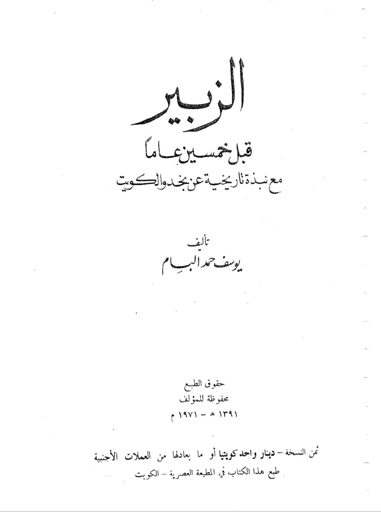
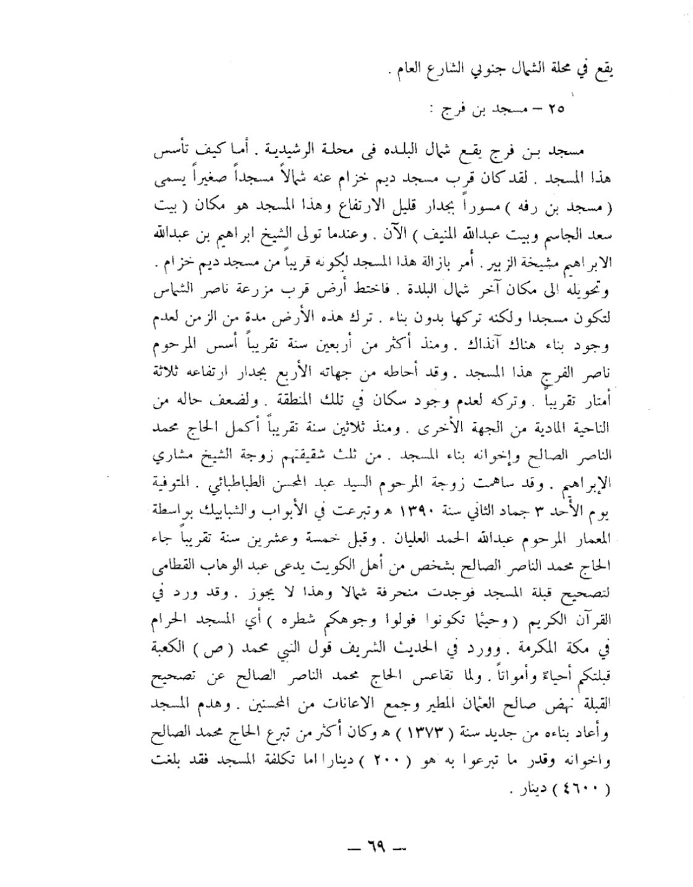

About 1946 (some twenty five years before the book, printed 1971) · Book pages, by Yousef Hamad Al-Bassam, Al-Zubair Qabl Khamseen Aaman, Al-Matba'a Al-Asriya, Kuwait, 1391 AH (1971)
Abdulwahab Al-Qatami corrects the qibla of Masjid bin Faraj in Al-Zubair
What it is
Page 69 tells the history of Masjid bin Faraj in the Rashidiya quarter in the north of Al-Zubair. It says that about twenty five years earlier, Haj Mohammed Al-Nasser Al-Saleh brought «a man from the people of Kuwait called Abdulwahab Al-Qatami» to correct the qibla of the mosque, and he found it turned too far to the north. Because Haj Mohammed held back from correcting it, Saleh Al-Othman Al-Mutair raised donations, and the mosque was pulled down and rebuilt in 1373 AH (1953 to 1954).
Why it matters
A Kuwaiti named Abdulwahab Al-Qatami was trusted to find the true direction of the qibla for a mosque in Al-Zubair. The book does not give his father’s name.
Page copies


Others named
Sources
Yousef Hamad Al-Bassam, Al-Zubair Qabl Khamseen Aaman ma'a Nubdha Tarikhiya an Najd wal-Kuwait, Al-Matba'a Al-Asriya, Kuwait, 1971, page 69
How this text was made: Photographed from the printed pages.
Open in the interactive site